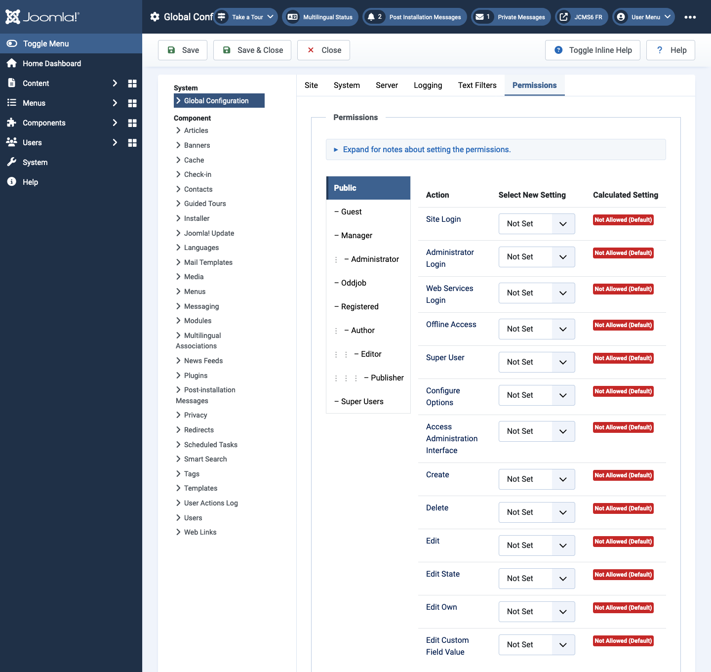
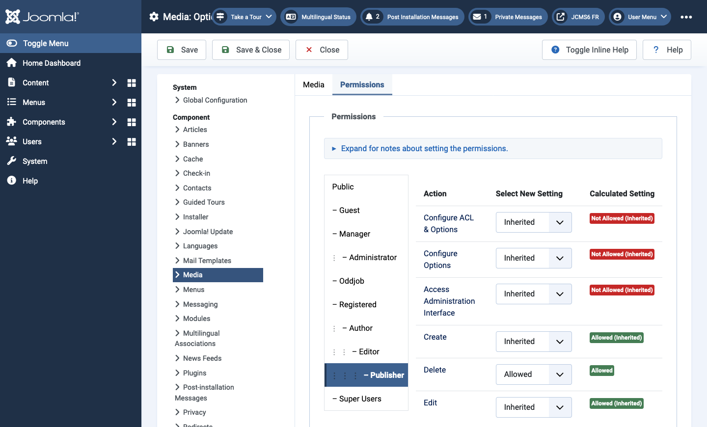
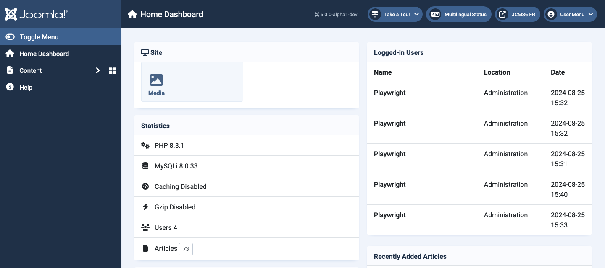
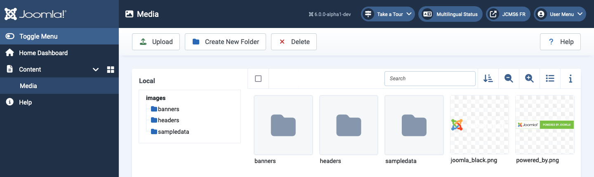

Many extensions have edit screens with a Permissions tab that is used to change the permissions allocated to User Groups. The number of User Groups may vary as custom User Groups can be added to use for special purposes. The number of Actions that can be altered also varies by extension. This article is a brief description of the permissions screens for such special purposes.
Imagine there is a user who looks after Media (images and files) but is not allowed any other responsibilities. A group named Oddjob has been created and assigned to the Special access level. A user also named Oddjob has been created and assigned to the Oddjob group.
For more detailed information on User Groups, Access Levels and Permissions there is a separate tutorial on Access Control.
In this example, users in the Oddjob group have been assigned Global permission to login to the Administrator interface but nothing else.

To access a specific component permissions must be set in the component options. In this example the Media component options.

You will notice that this component has fewer Actions available and the Oddjob group is allowed just enough permissions to do the job.
To change the permissions for this component:
After login, a user in the Oddjob group will see whatever Home Dashboard modules have Special access set and a Menu item link to the Media component.

And the Media screen for user Oddjob is as expected:
